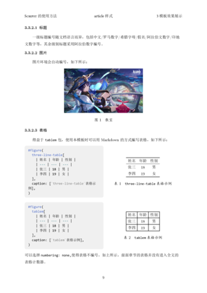
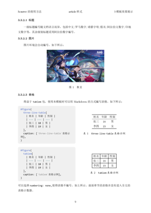

Scripst
Scripst ist ein Vorlagenpaket basierend auf Typst, das eine Reihe einfacher und effizienter Dokumentvorlagen bietet, die für alltägliche Dokumente, Aufgaben, Notizen, Artikel und andere Szenarien geeignet sind.
📑 Inhalt
- 📑 Inhalt
- 🚀 Funktionen
- 📦 Installation
- Installieren Sie Typst
- Scripst-Vorlage herunterladen
- 📄 Scripst verwenden
- Scripst-Vorlage importieren
- Dokument vom Typ
articleerstellen - 🔧 Vorlagenparameter
- ✨ Vorlagenbeispiele und Erläuterungen
- Artikel
- Buch
- Bericht
- 📜 Mitwirkung
- 📌 Schriftarten
- 📦 Abhängigkeiten
- 🎯 TODO
🚀 Funktionen
- Hochgradig erweiterbar: Modulare Design, einfach erweiterbar.
- Mehrsprachliche Gestaltung: Lokalisierung für verschiedene Sprachen.
- Unterstützung für benutzerdefinierte Zähler: Bequem für die Generierung von Sätzen, Problemen und anderen Zählern oder Stilen.

 

📦 Installation
Installieren Sie Typst
Stellen Sie sicher, dass Typst installiert ist. Sie können es mit den folgenden Befehlen installieren:
sudo apt install typst # Debian/Ubuntu
sudo pacman -S typst # Arch Linux
winget install --id Typst.Typst # Windows
brew install typst # macOS
Oder beziehen Sie sich auf die offizielle Dokumentation von Typst für weitere Informationen.
Scripst-Vorlage herunterladen
Methode 1: Manuelles Herunterladen
- Besuchen Sie das GitHub-Repository von Scripst
- Klicken Sie auf den Button
<> Code - Wählen Sie
Download ZIP - Nach der Entpackung legen Sie die Vorlagendateien in Ihr Projektverzeichnis.
Empfohlene Verzeichnisstruktur
project/
├── src/
│ ├── main.typ
│ ├── components.typ
├── pic/
│ ├── image.jpg
├── main.typ
├── chap1.typ
├── chap2.typ
Wenn die Vorlage im Verzeichnis src/ gespeichert ist, importieren Sie sie wie folgt:
#import "src/main.typ": *
Methode 2: Verwenden der lokalen Paketverwaltung von Typst
Sie können Scripst manuell herunterladen und speichern:
~/.local/share/typst/packages/local/scripst/1.1.0 # Linux
%APPDATA%\typst\packages\local\scripst\1.1.0 # Windows
~/Library/Application Support/typst/packages/local/scripst/1.1.0 # macOS
oder mit diesen Befehlen:
cd {data-dir}/typst/packages/local/scripst
git clone https://github.com/An-314/scripst 1.1.0
Wo data-dir auf das Dataverzeichnis von Typst verweist, z.B. ~/.local/share/typst für Linux, %APPDATA%\typst für Windows und ~/Library/Application Support/typst für macOS.
Dann importieren Sie direkt in Ihrer Typst-Datei:
#import "@local/scripst:1.1.0": *
Jetzt können Sie die Scripst-Vorlage verwenden.
Verwenden Sie typst init, um ein Projekt schnell zu erstellen:
typst init @local/scripst:1.1.0 project_name
📄 Scripst verwenden
Scripst-Vorlage importieren
Importieren Sie die Vorlage am Anfang Ihrer Typst-Datei:
#import "@local/scripst:1.1.0": *
Dokument vom Typ article erstellen
#show: scripst.with(
title: [Wie Scripst verwenden],
info: [Dies ist eine Artikelvorlage],
author: ("Autor1", "Autor2", "Autor3"),
time: datetime.today().display(),
abstract: [Zusammenfassungsinhalt],
keywords: ("Stichwort1", "Stichwort2", "Stichwort3"),
contents: true,
content_depth: 2,
matheq_depth: 2,
lang: "en",
)
🔧 Vorlagenparameter
| Parameter | Typ | Standardwert | Beschreibung |
|---|---|---|---|
template |
str |
"article" |
Wählen Sie Vorlage ("article", "book", "report") |
title |
content, str, none |
"" |
Dokumenttitel |
info |
content, str, none |
"" |
Dokumentuntertitel oder zusätzliche Informationen |
author |
array |
() |
Liste der Autoren |
time |
content, str, none |
"" |
Dokumentdatum |
abstract |
content, str, none |
none |
Dokumentzusammenfassung |
keywords |
array |
() |
Stichworte |
preface |
content, str, none |
none |
Einleitung |
font_size |
length |
11pt |
Schriftgröße |
contents |
bool |
false |
Ob ein Inhaltsverzeichnis generiert werden soll |
content_depth |
int |
2 |
Tiefe des Inhaltsverzeichnisses |
matheq_depth |
int |
2 |
Tiefe der Mathematikgleichungsnummerierung |
lang |
str |
"zh" |
Sprache ("zh", "en", "fr", usw.) |
✨ Vorlagenbeispiele und Erläuterungen
Artikel

Buch


Buch-Demo (nur in vereinfachtem Chinesisch)
Bericht
Bericht-Demo (nur in vereinfachtem Chinesisch)
📜 Mitwirkung
Fühlen Sie sich frei, Probleme zu melden oder Pull Requests zu senden! Wenn Sie Verbesserungsvorschläge haben, nehmen Sie an der Diskussion teil.
- GitHub-Repository: Scripst
- Problemankündigungen: Melden Sie ein Problem, um darüber zu diskutieren
📌 Schriftarten
Dieses Projekt verwendet standardmäßig die folgenden Schriftarten:
- Hauptschriftarten: CMU Serif, Consolas
- Alternativen: Linux Libertine
- Chinesische Schriftarten wie SimSun, SimHei, KaiTi, usw.
Wenn Sie diese Standard-Schriftarten verwenden, stellen Sie bitte sicher, dass sie korrekt installiert sind. Andernfalls ersetzen Sie sie gegebenenfalls in ./src/configs.typ.
📦 Abhängigkeiten
Für bestimmte Inhalte verwendet Scripst die folgenden Typst-Pakete:
🎯 TODO
- [ ] Fügen Sie eine
beamer-Vorlage hinzu